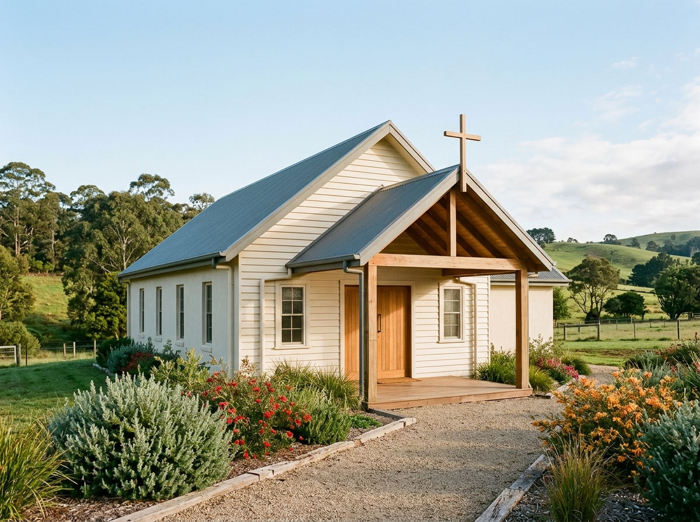

Sunday Worship
Sundays at 10:00 am
Followed by morning tea in the hall...reaching the lost for Christ.

We are the Christian Reformed Church of South Gippsland (CRCSG). We are a community committed to loving God, loving others and reaching the lost for Christ. We are made up of people from all ages and stages of life and we come from a variety of backgrounds and upbringings. We are a Bible believing and confessional church. If you are interested in finding out about Jesus and Christianity or are looking for a new church contact us or come and join us Sunday mornings @ 10am.
Each Sunday we open God’s Word together to see Jesus Christ clearly and apply the gospel to everyday life. This player automatically updates whenever a new sermon is uploaded to our YouTube channel.
Whether you are exploring Christianity for the first time or visiting South Gippsland, here is where to find out more about who we are.
Grounded in God’s inspired Word and summarized in the three ecumenical creeds, the Reformed confessions, and the Five Solas of the Reformation.
Read our beliefs →From our Sunday Kids Talk and Kids Church to our Safeguarding Children policy, we strive to be a welcoming, protective place for every child.
Safeguarding commitment →Find simple PayID and direct bank transfer details for regular tithes, offerings, and church giving.
Corner of Brown St & Peart Street, Leongatha. Stay after the service for tea, coffee, morning tea, and friendly conversation in the church hall.